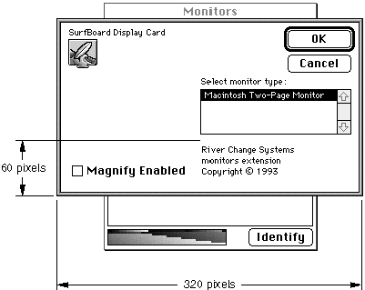
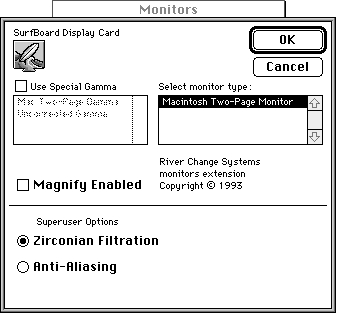

Creating the Required Resources for a Monitors Extension
This section describes the four required resources that you supply for your monitors extension.To create these resources, either you can specify the resource description in an input file and compile the resource using a resource compiler, such as Rez, or you can directly create your resources in a resource file using a tool such as ResEdit.
The required resources and their resource IDs are
- the card (
'card') resource: resource ID from -4080 through -4065- the rectangle (
'RECT') resource: resource ID -4096- the item list (
'DITL') resource: resource ID -4096- the monitor (
'mntr') resource: resource ID -4096Creating a Card Resource for a Monitors Extension
You create a card resource of type'card'to identify the monitors extension for your video card and to specify the name of your video card. When the monitor to which your card is connected is the selected one and the user clicks the Options button, the Monitors control panel checks all monitors extension files for a card resource that contains the name of your video card. If it finds a match, the Monitors control panel extends the Options dialog box to display the monitors extension containing the matching card resource. The Monitors control panel also displays, at the very top of the Options dialog box, your video card's name as defined in the card resource. This title indicates to the user that the Options dialog box pertains to your card. For example, Figure 8-11 on page 8-49 shows the Macintosh Display Card name at the top of the Options dialog box. The card resource is required, and its resource ID must be in the range of -4080
through -4065.Your card resource must contain a Pascal string identical to the name of your video card as specified in the
sResourcedata structure in the ROM of the card. (For more information on thesResourcedata structure, see Designing Cards and Drivers for the Macintosh Family, third edition.)If you do not want to use the video card name specified in the ROM of the card, you can include in your monitors extension file a string list resource of type
'STR#'. In that resource, specify an alternative name for the Monitors control panel to display. See "Providing an Alternative Name for a Video Card" on page 8-58 for more information.You use a card resource to ensure that your monitors extension is called when the user selects the monitor to which your card is connected and clicks the Options button. Because your monitors extension file can contain as many card resources as you wish, one extension file can handle several types of video cards. For example, Listing 8-17 shows two card resources; thus, when the user selects the monitor connected to the SurfBoard Display Card or the SurfBoard Super Display Card, the monitors extension
MyMonExtendis called. (See Listing 8-25 on page 8-64 for theMyMonExtendfunction.)Listing 8-17 Rez input for a card (
'card') resourceresource 'card' (-4080, purgeable) { "SurfBoard Display Card" }; resource 'card' (-4079, purgeable) { "SurfBoard Super Display Card" };Defining a Rectangle for a Monitors Extension
You create a rectangle resource of type'RECT'to define the display area for the controls of your monitors extension. When the user clicks the Options button in the Monitors control panel, the Monitors control panel uses your monitors extension to expand the Options dialog box under these circumstances: if the monitor connected to your video card is currently selected, and if you have provided a monitors extension
for your card. Before displaying it, the Monitors control panel expands the Options dialog box to include the space defined by the rectangle resource. The rectangle resource is required, and its resource ID must be -4096.To specify the top coordinate of your rectangle, determine the height in pixels of the space required to display your controls and specify that value as a negative number. For example, if you need a display area that is 60 pixels high, specify -60 as the top coordinate. Specify 0 as the left coordinate. This is the same value used to define the left edge of the Options dialog box, and your rectangle should have the same left edge.
Specify 0 as the bottom coordinate. You can think of the distance from the bottom coordinate to the top coordinate--60 pixels, in this example--as the height of your rectangle. Specify 320 as the right coordinate. This is the same value used to define the right edge of the Options dialog box, and your rectangle should have the same right edge.
Figure 8-14 shows the Options dialog box for the SurfBoard Display Card. The OK and Cancel buttons and the scrollable list for the monitor type are standard controls. The Magnify Enabled checkbox and three lines of text have been added by the SurfBoard monitors extension. This figure shows the height and width, in pixels, defined in the rectangle resource; this is the area required to display the additional controls.
- Note
- Although you specify other coordinate values for your rectangle's origin, when you assign coordinates to your controls, assume that
the origin of the local coordinate system for your dialog items is (0,0).Figure 8-14 Display area defined by a rectangle resource

Listing 8-18 shows, in Rez input, the rectangle resource used in this example. Notice that the top coordinate is -60 and the bottom coordinate is 0. In other words, the space to be added to the Options dialog box is 60 pixels high.Listing 8-18 Rez input for a rectangle (
'RECT') resourceresource 'RECT' (-4096, purgeable) { {-60,0,0,320} };Creating an Item List Resource for a Monitors Extension
You provide an item list resource of type'DITL'to specify which items you want to appear in the rectangle display area (see the previous section for information about the rectangle resource). In an item list, you specify static text, buttons, checkboxes, radio buttons, editable text, user items, the resource IDs of icons and QuickDraw pictures, and the resource IDs of other types of controls, such as pop-up menus. The item list is required, and its resource ID must be -4096.When you assign coordinates to your controls, assume that the origin (that is, the upper-left corner) of the local coordinate system is (0,0). The Monitors control panel transforms the coordinates of your controls to the coordinate system that it uses for the Options dialog box. Thus, you must use the
GetDialogItemprocedure to get the true locations of your dialog items. See the chapter "Dialog Manager" in Inside Macintosh: Macintosh Toolbox Essentials for information on theGetDialogItemprocedure.If you add additional controls for superusers, you should place them below a horizontal line separating them from other controls, as illustrated in Figure 8-15.
Figure 8-15 The SurfBoard Options dialog box with superuser controls

To draw a dividing line, specify a separate dialog item of typeuserItem. Listing 8-19 shows the item list resource for the SurfBoard monitor extension. Notice that the dividing line (item 2) is defined as a user item.Listing 8-19 Rez input for the SurfBoard monitors extension item list resource
resource 'DITL' (-4096, purgeable) { { /* [1] */ {10, 151, 50, 314}, StaticText { disabled, "River Change Systems\nmonitors extension" "\nCopyright © 1993" }, /* [2] dividing line for superuser controls*/ {60, 1, 61, 319}, UserItem { enabled }, /* [3] */ {70, 28, 80, 236}, StaticText { enabled, "Superuser Options" }, /* [4] */ {82, 7, 110, 200}, RadioButton { enabled, "Zirconian Filtration" }, /* [5] */ {112, 7, 132, 200}, RadioButton { enabled, "Anti-Aliasing" }, /* [6] */ {22, 7, 58, 160}, CheckBox { enabled, "Magnify Enabled" } } };Listing 8-29 on page 8-70 shows the procedure that the SurfBoard monitors extension function uses to draw a line separating the items for normal users from the items displayed for superusers. It uses the QuickDrawFrameRectprocedure to draw the item as a 1-pixel-high rectangle. After calling theFrameRectprocedure, a monitors extension can also dither the line in the same manner used to dither menu divider lines. (For information on theFrameRectprocedure, see Inside Macintosh: Imaging with QuickDraw.)If you use an item color table resource of type
'ictb'to draw your items in color or in a different font, you must include placeholder entries for the standard Options dialog box items before you define the item color table entries to be mapped to the items in your monitors extension item list. This step is necessary because the Monitors control panel appends your monitors extension item list to that of the Options dialog box. To maintain the mapping between entries in the item color table ('ictb') and your item list, you must account for the Options dialog box items.Currently, the Options dialog box contains 10 items (although this number is subject to change in future implementations of the Monitors control panel). An item color table entry contains two words for each corresponding item. For this implementation of the Monitors control panel, you can ensure that the first item in your item list is mapped to the correct item color table entry as follows: create 10 entries in the item color table to correspond to the 10 items in the Options dialog box, and specify a value of 0 for both words of each entry.
Creating the Monitor Code Resource
A monitor code resource (of type'mntr') contains the code that carries out the functions of a monitors extension. In MPW, you can set the code resource type to'mntr'when you link the program. When you create such a resource, the resource must begin with a function that you provide, called the monitors extension function.The Monitors control panel passes to your monitors extension function parameters that specify actions to perform. You can use the function result to keep a handle to allocated memory or to return an error code. For more information about the monitors extension function, see "Writing a Monitors Extension Function" beginning on page 8-61.